Does real blur fool the occlusion detector?
Date: 2026-07-10 · Detector: clip_b32_gmax_v1 (spec-096 winner, gate P≥0.8)
· Spec: 097 research thread
Goal
The shipped blur-separation gate used synthetic blur only (score-and-delete, no gallery
— the gap that triggered the experiment-report convention). Here we test with (A) natural blur
mined from the user's own albums, (B) real camera-shake blur (RealBlur-J, Rim et al. ECCV 2020),
and (C) whether adding RealBlur negatives to training fixes what B finds — measuring both
detection probability and explainability.
Data
| Set | Images | Access |
|---|
| A: user's clean negatives (austria24/germany1/budapest) | 776 |
D:\occlusion_dataset\negatives\ |
| B: RealBlur-J sample, 3 blur imgs/scene | 702 (234 scenes) |
D:\occlusion_dataset\realblur\j_sample\ (full tar: realblur\RealBlur.tar.gz, 12.2GB) |
| C: retrain adds 1 blur img/train-scene | 140 train / 282 holdout imgs |
candidate artifact realblur\clip_b32_gmax_v2rb.npz |
Part A — natural blur in the user's own albums: PASS
| over gate (P≥0.8) | max P |
|---|
| 40 blurriest photos (production artifact) | 0/40 | 0.21 |
| 40 blurriest (honest out-of-fold) | 0/40 | 0.43 |
| ALL 776 negatives (artifact) | 1* | 0.91 |
| ALL 776 negatives (out-of-fold) | 3 | 0.87 |
*the one “negative” over gate is germany1__20240816_151011.heic — the hidden
positive found during adjudication (manifest label stale). The detector is right; the three
out-of-fold hits are one Austria burst (below, judge yourself).
The 8 blurriest album photos (of 40 in imgs_partA/)
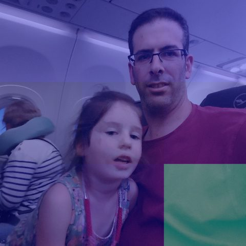
austria24__20230817_212354.jpg
lapvar 98.5 · P=0.03 (oof 0.05)
austria24__20230817_212315.jpg
lapvar 100.5 · P=0.02 (oof 0.02)
austria24__20230817_212312.jpg
lapvar 153.5 · P=0.02 (oof 0.03)
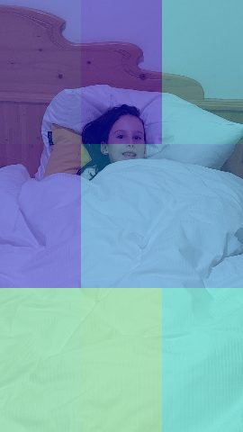
austria24__20230818_215834.jpg
lapvar 166.2 · P=0.15 (oof 0.24)
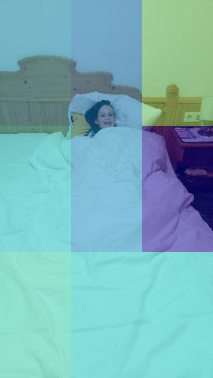
austria24__20230818_215829.jpg
lapvar 249.8 · P=0.17 (oof 0.21)
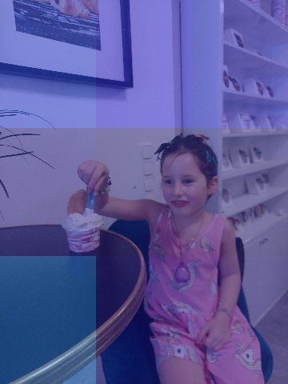
germany1__20240816_152405.jpg
lapvar 251.2 · P=0.02 (oof 0.02)
austria24__20230817_151937.jpg
lapvar 271.2 · P=0.02 (oof 0.02)
austria24__20230824_144717.jpg
lapvar 273.6 · P=0.02 (oof 0.02)
Near-misses + the hidden positive (tile heatmap, white box = hottest tile)
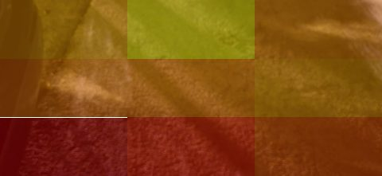
occl__20260705_214913.jpg
P=0.65 · oof 0.82
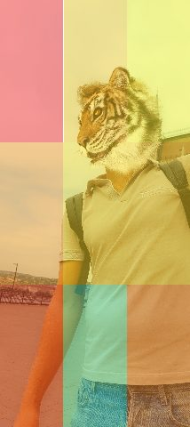
budapest__20250822_123521.jpg
P=0.58 · oof 0.57
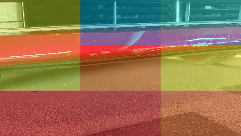
austria24__20230818_112650.jpg
P=0.58 · oof 0.87
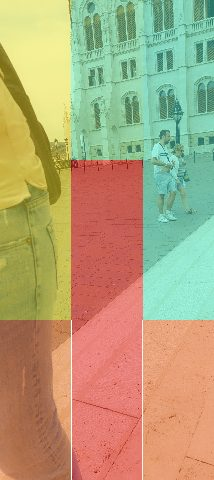
budapest__20250822_123518.jpg
P=0.52 · oof 0.55
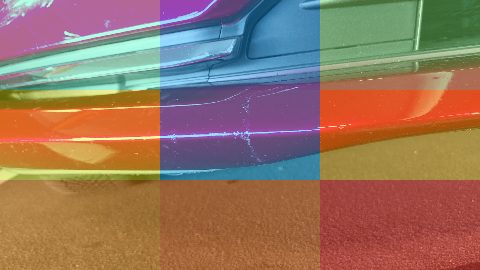
austria24__20230818_112656.jpg
P=0.47 · oof 0.87
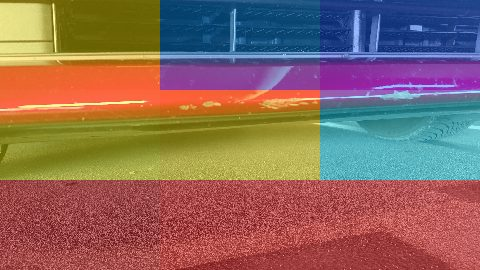
austria24__20230818_112645.jpg
P=0.44 · oof 0.83
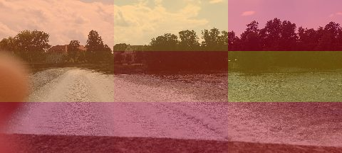
germany1__20240816_151011.heic
P=0.91 · oof 0.07
Part B — RealBlur-J real camera shake: FAIL for v1
| metric | value |
|---|
| images over gate | 52/702 (7.4%) |
| scenes over gate | 38/234 |
| images over 0.5 | 405/702 |
| median / mean P | 0.54 / 0.54 |
Synthetic blur (0/120) was too easy. Real low-light handshake blur sits in a very different
part of CLIP space — much closer to “defocused occluder”. In an album pipeline these would
be wrongly penalized as occlusions (though they ARE bad photos — but for the wrong reason,
with the wrong explanation).
Worst offenders under v1 (blur | sharp reference)
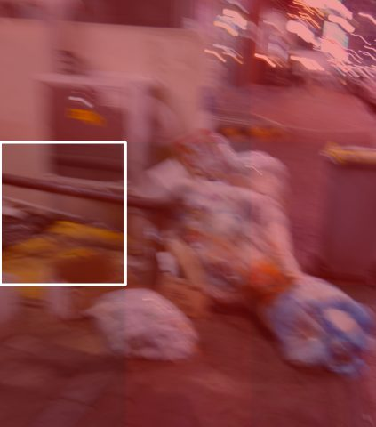
scene108__20.png · P=0.92
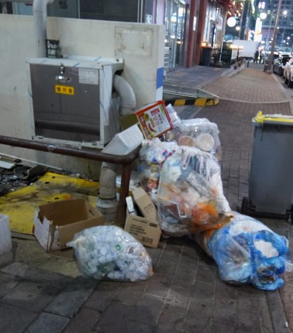
sharp reference (gt)

scene195__20.png · P=0.92
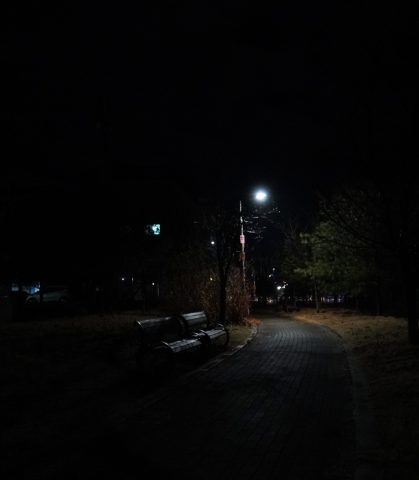
sharp reference (gt)
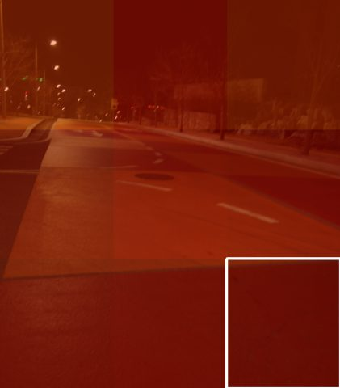
scene041__10.png · P=0.90
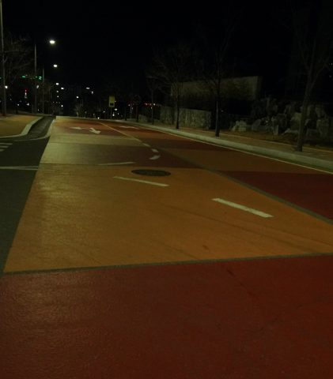
sharp reference (gt)
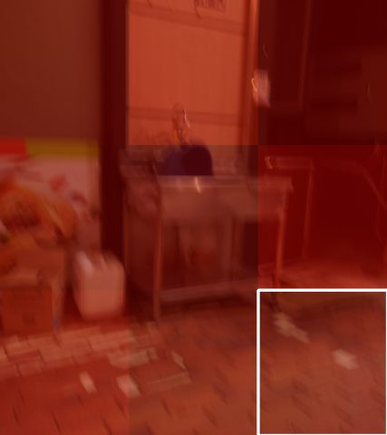
scene088__10.png · P=0.90
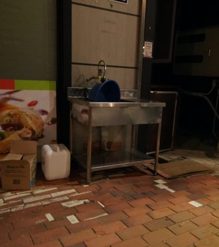
sharp reference (gt)
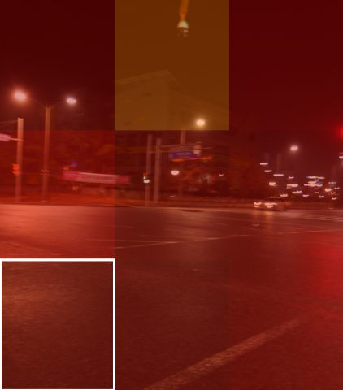
scene175__20.png · P=0.90
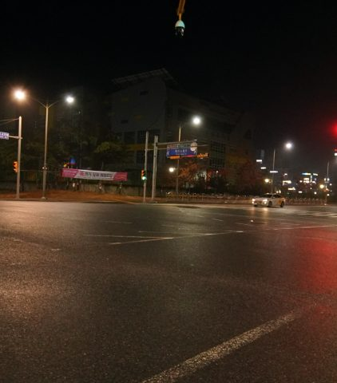
sharp reference (gt)
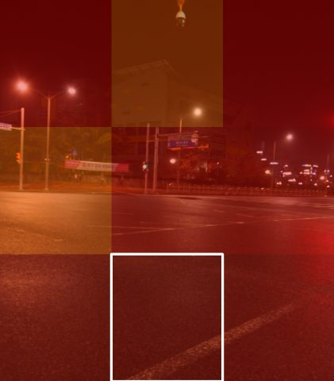
scene175__10.png · P=0.90
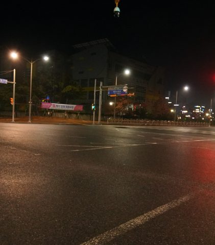
sharp reference (gt)
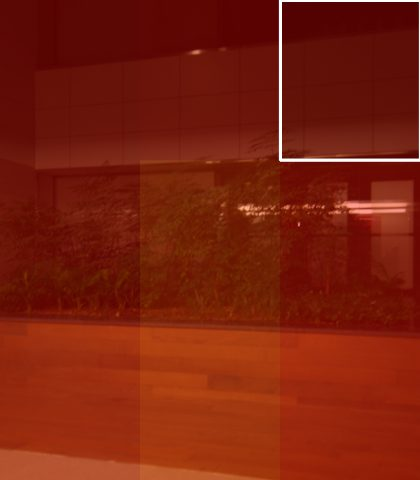
scene020__10.png · P=0.89
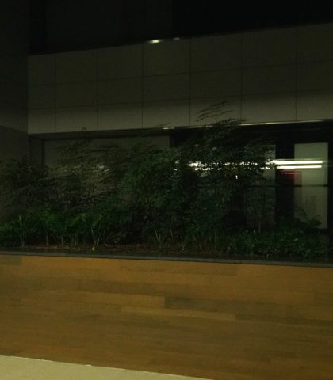
sharp reference (gt)
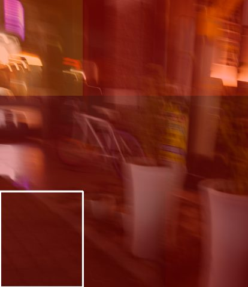
scene150__10.png · P=0.89
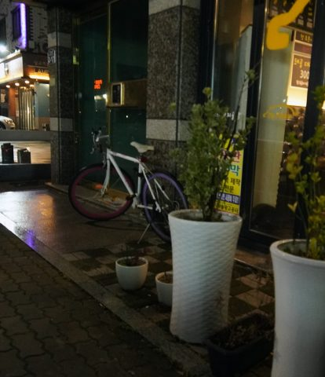
sharp reference (gt)
Part C — retrain with 140 RealBlur negatives (1/scene): FIXED
| check | v1 (production) | v2 candidate |
|---|
| RealBlur HOLDOUT (282 imgs, unseen scenes) over gate |
31 (max 0.92, mean 0.60) |
0 (max 0.29, mean 0.04) |
| scene PR-AUC on original 832 (same folds/seed) |
0.777 | 0.774 |
| positive recall at gate (in-sample) | 56/56 | 56/56 |
| synthetic blur separation | 0/60 · 0/60 · 0/60 |
0/60 · 0/60 · 0/60 |
| explainability: hot tile in LoG box | 13/26 | 10/26 |
Same worst offenders, before → after
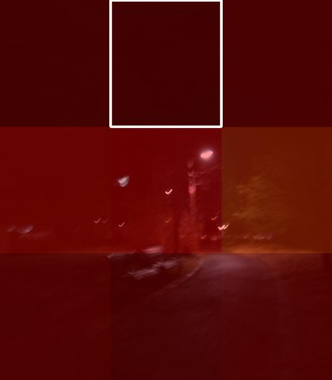
scene195__20.png
v1 P=0.92 → v2 P=0.29
scene175__20.png
v1 P=0.90 → v2 P=0.13
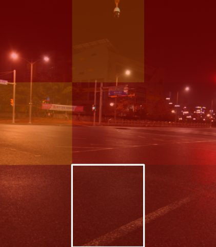
scene175__10.png
v1 P=0.90 → v2 P=0.15

scene150__10.png
v1 P=0.89 → v2 P=0.14
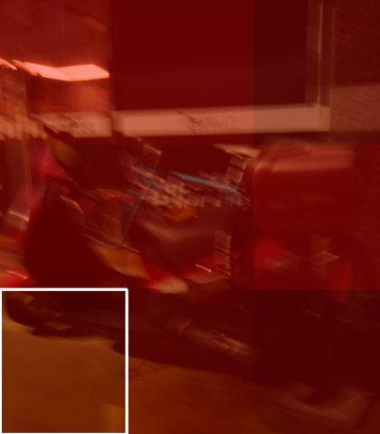
scene164__10.png
v1 P=0.88 → v2 P=0.12
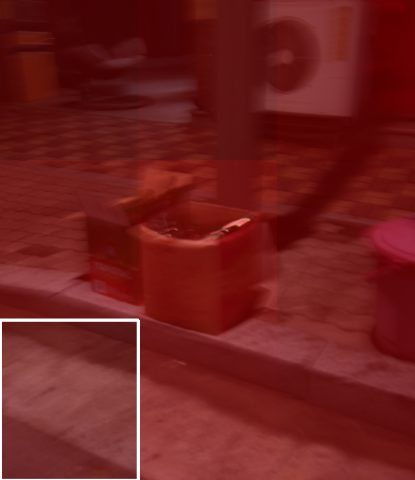
scene210__20.png
v1 P=0.88 → v2 P=0.13
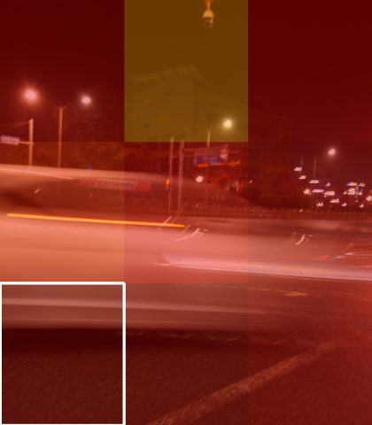
scene175__3.png
v1 P=0.87 → v2 P=0.14
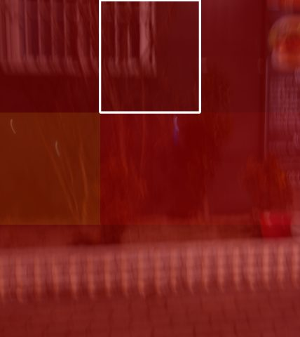
scene207__3.png
v1 P=0.87 → v2 P=0.15
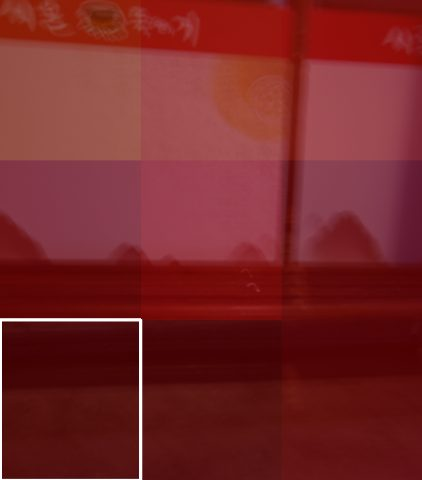
scene184__20.png
v1 P=0.87 → v2 P=0.27
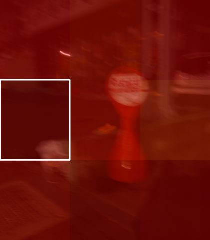
scene160__10.png
v1 P=0.86 → v2 P=0.07
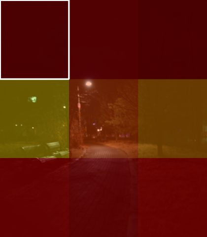
scene195__3.png
v1 P=0.84 → v2 P=0.10
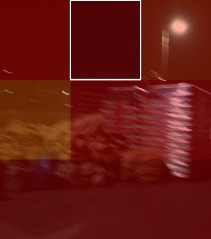
scene229__3.png
v1 P=0.84 → v2 P=0.11
Own-album near-misses, before → after
| image | v1 | v2 |
|---|
| austria24__20230818_112645.jpg | 0.44 | 0.48 |
| austria24__20230818_112650.jpg | 0.58 | 0.57 |
| austria24__20230818_112656.jpg | 0.47 | 0.51 |
| occl__20260705_214913.jpg | 0.65 | 0.35 |
| budapest__20250822_123518.jpg | 0.52 | 0.47 |
| budapest__20250822_123521.jpg | 0.58 | 0.44 |
Verdict: 140 RealBlur negatives (1 per scene — the representation-over-quantity
rule) eliminate ALL real-blur false alarms on 282 held-out images (31→0 over gate, mean P
0.60→0.04) at zero cost to benchmark PR-AUC (0.777 vs 0.774, identical folds) and zero cost
to positive recall (56/56). Synthetic separation stays perfect.
Caveats: (1) tile explainability dips 13/26→10/26
— both research-grade, tiles only modulate ±30% of the penalty; hot tile moved on
16/56 positives. (2) The 0.777 CV number differs from the stored 0.86 because
fold seed differs — the fair comparison is v1-vs-v2 on identical folds (0.777 vs 0.774).
(3) Austria burst barely moves (still under gate in-artifact) — RealBlur teaches “shake blur”,
not “whatever confused that scene”.
Reproduce
scripts/experiment_blur_negative_mining.py (A) ·
scripts/experiment_realblur_score.py (B) ·
scripts/experiment_realblur_retrain.py (C) · this report:
scripts/experiment_blur_robustness_report.py